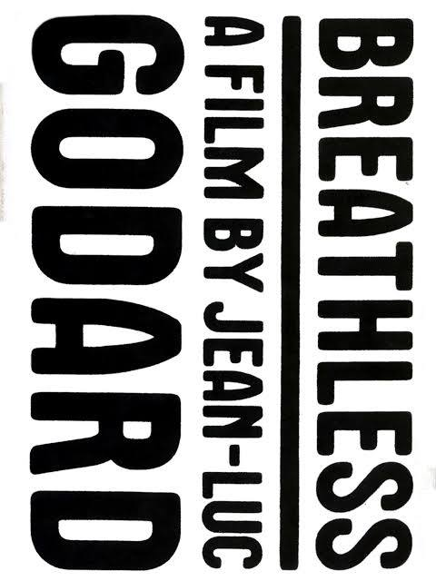

| ACCELERATE NOW! A brief History of the near-future |
| Stochastic Parrots peck away at the deeper impulses behind
AI: Feminist critique of white male fantasies of speed (think of Marinetti), size (large language models), scale Gebru, Torres (2024): The TESCREAL Bundle: Eugenics and the Promise of Utopia through Artificial General Intelligence Interconnections between eugenics, longtermism, effective altruism, pursuit of AGI, accelerationism – a coherent ideology? Technology (pace Aaron) associated with techne: skill, craft, practice Contrasted with episteme, theoretical knowledge (Aristotle) Contrasted with poesis: closer to manifesting, bringing forth, revealing (Heidegger) Techne is the non-theoretical, non-poetic: the messy making of things Contemporary stereotypes: the artist vs the technician; the abstract thinker or strategist vs the person concerned with technique Does Silicon Valley still struggle with an inferiority complex? It is not academic (technical knowledge is shallow, ephemeral – no episteme) It is not artistic (technicians cannot be cool – no poeisis) Techbros go cultural: Gates’ infamous dance, Zuckerberg’s “glow up”, Musk’s SNL appearance, the Silicon Valley “philosophers” (Thiel, Schmidt, Andreesen, Karp, Friedman) |
| Extreme: racist, sexist, proto-fascist. Marinetti a friend and
supporter of Mussolini in the 1910s Celebrates youth, speed, breaks with the past (leads to concern about fascism’s reactionary tendencies). Desire for violence. Technology is not computation; it is fast cars, streetcars, trains Later echoes? Punk? Grunge? Techno? Anarchism? Other subcultures Blends hedonism, nihilism, violence, speed. Coincidentally the rise of psychoanalysis and theorisation of the Pleasure Principle and the Death Instinct (1920). Post-war echoes: Benedek’s The Wild One (1953). Goddard’s Un Bout de Souffle (1960), J.G. Ballard’s Crash (1973), Saura’s Deprisa Deprisa (1981) “Standing on the world’s summit we launch once again our insolent challenge to the stars!” – think of the role of rockets and Mars in contemporary futurist fantasies |
 |
| I like to think (and the sooner the better!) of a cybernetic meadow where mammals and computers live together in mutually programming harmony like pure water touching clear sky. I like to think (right now, please!) of a cybernetic forest filled with pines and electronics where deer stroll peacefully past computers as if they were flowers with spinning blossoms. Responses? Desirable?** Sinister? IRONIC? IDEALISTIC?** |
I like to think (it has to be!) of a cybernetic ecology where we are free of our labors and joined back to nature, returned to our mammal brothers and sisters, and all watched over by machines of loving grace. |
| Left Accelerationist Tendencies: Accelerate Capitalism until it Collapses upon Itself Fixed Capital / Dead is a Social Product, Shared Inhertance (Marx) Fully Automated Luxury Communism (Bastani, Williams, Srnicek) Break free of Oppressive Identities – Make Your Own through Technology (Haraway’s Cyborg) Better, Scientific Breakthroughs (Amodei) Universal Basic Income?! |
Right Accelerationist Tendencies: The World is Agonistic, Zero Sum Game (Peter Thiel, via Carl Schmitt (1930s)) Accelerate Capitalism Forever (Trickle-down Economics; All Boats Rise) Reward Innovation – Aim to Monopolise Also Regressive: Protect Traditional Identities (Thiel’s Christianity) Better, Scientific Breakthroughs (Amodei) Universal Basic Income?! |
| For Marx (in this celebrated “Fragment on Machines” at any rate), we
get a cyborgian image of labour – the machine at its centre, human
workers merely appendages But, once adopted into the production process of capital, the means of labour passes through different metamorphoses, whose culmination is the machine, or rather, an automatic system of machinery (system of machinery: the automatic one is merely its most complete, most adequate form, and alone transforms machinery into a system), set in motion by an automaton, a moving power that moves itself; this automaton consisting of numerous mechanical and intellectual organs, so that the workers themselves are cast merely as its conscious linkages. |
| “Capital itself is the moving contradiction, [in]
that it presses to reduce labour time to a minimum,
while it posits labour time, on the other side, as sole measure
and** source of wealth.” “What capital adds is that it increases the surplus labour time of the mass** by all the means of art and science, because its wealth consists directly in the appropriation of surplus labour time; since value directly its purpose, not use value. It is thus, despite itself, instrumental in creating the means of social disposable time, in order to reduce labour time for the whole society to a diminishing minimum, and thus to free everyone’s time for their own development.” Marx imagines here the acceleration of capitalism: Capitalism wants profit, and therefore to create as much “surplus labour time” as possible. More surplus labour = more surplus value = more profit So it develops technology (“art and science”) to exploit workers more But this really means capitalism means the necessities of life are made more efficiently Eventually (?) this surplus becomes “social disposable time” which can be employed – not for the capitalists’ profit – but for “their own development” (i.e. whatever you want) Marx’ accelerationist paradox: factory machinery exploits labour, but also creates the conditions for eventual emancipation and utopia Also important: Marx sees machinery as involving social (not individual) production. Dead labour / fixed capital is durable. It is, if we like, the gift of preceding generations to our own: techniques and material that enable us to live with less “circulating” labour. We don’t need to work as hard to survive. Moreover we become new kinds of subjects: “Free time – which is both idle time and time for higher activity – has naturally transformed its possessor into a different subject, and he then enters into the direct production process as this different subject.” This is not the Marx we grew up with: he wants a future without work, focussed on human development and growth… |
| Williams & Scnicek: what if this accelerationist Marx was right?
Accelerate to deliver universal luxury (Bastani: Fully Automated Luxury
Communism) Thiel: Essentially an agonistic view of geopolitics. Technology & AI become tools to protect national interest (invests in Palantir, Anduril). Accelerate |